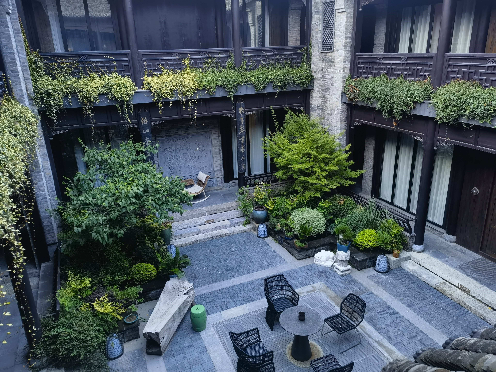
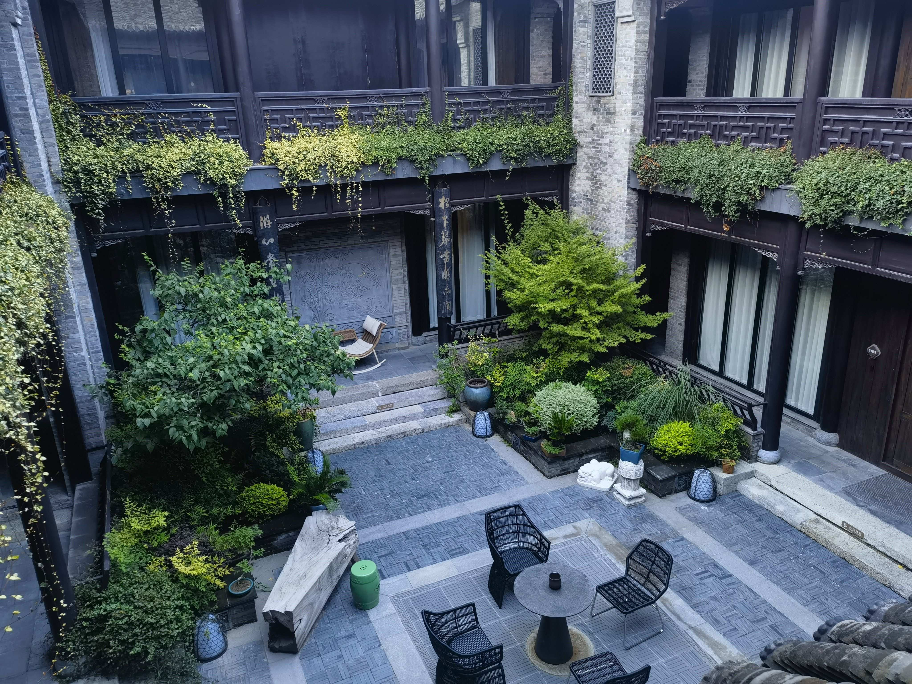

青岛-连云港-徐州-南京
FOREWORD：
2024年暑假，前往青岛，连云港，徐州，南京游玩
出发
准备去酒店
19号晚，收好东西后，从家里出发，坐上地铁前往天河机场，为了找个位置坐特意往回坐了几站。从学校这一站如果直接上车，后面想再坐上位置难如登天。
经过一个多小时的地铁，几乎坐穿二号线，终于到站了。
等车中
到酒店后，出去觅食，找了家烧烤店，非常好吃，味足量大，老板人很好
出发
早上6点出发去航站楼
早上的太阳
上飞机了
机场
机票
飞机上难的好吃的饭，吃了一份半
好吃的早餐
青岛
降落青岛机场咯
降落
先做了两个多小时地铁到了酒店，中午吃的地锅鸡外卖，下午打车前往金沙滩
准备去金沙滩
在玩水
写字
晚上在沙滩边上骑电动车，32两个小时的小电动车，沿着金沙滩边上的绿道骑了一个来回
帅照
晚饭在边上青岛啤酒吃的，很贵很难吃，性价比极低，好在青岛鲜啤还是不错的，物超所值
虽然海肠捞饭味道不错，但是99的价格下还是显得难吃了一点
海肠捞饭
青岛栈桥-八大关-五四广场
先去栈桥
第二天前往栈桥，八大关，以及五四广场
在栈桥拍的，人很多，栈桥很窄，不好玩
逛完了栈桥在路边买蜜雪冰城，蜜雪还是挺好的
喝完蜜雪，去了一家大排档吃饭，依旧是价格贵且非常难吃
又贵又难吃的饭
吃完饭去八大关
吃完了坐公交车去八大关，没有看到租电动车的，公交车是一个很好的选择，正好沿着海边公路开，能看到海
到八大关下车了，环境很好，有很多树，就是蚊子比较多。还好有驱蚊喷雾，蚊子一喷就倒地抽搐了
八大关只是因为有八条路被命名为各种关，嘉峪关路，居庸关路等等，然后这一片就叫八大关。旁边有一个第二海水浴场，人挺多的，而且冲水2元40秒，卫生间两个水龙头还坏了一个，不想花钱冲水只能拿买的挖沙小桶接水冲一下，体验极差
八大关里面的建筑都还是很有特色的，有很多小别墅，但是都是管控区域不让进，
公交车直达五四广场
走了好远到了一个公交车站，等了好一会儿，来了一辆小公交车，只有正常公交车的一半大小，带我们去五四广场
五四广场人很多，都在路边坐着，也不知道在干嘛，后来了解到他们是在等边上高楼的灯光表演，然后我们准备去情人坝看，据说是除了海水浴场第二好的观景点，只有两公里，打的走了十几分钟，快到门口了被堵住了，最后走进去的
灯光表演
灯光表演好看，氛围很好

全景
栏杆边
合照
看完了表演，准备离开的时候路过一个卖纪念品的超市，买了两条珍珠手链，一个给小雨，一个给老妈
珍珠手链
晚上准备去吃一家网红店，但是我们去的太晚已经打烊了，于是只能坐地铁回去。但是晚饭还没吃，在抖音上发现有一个小吃街在酒店附近，于是准备去那边吃点东西。到嘉陵江西路站要换线，换线正好错过最后一班，无奈之下只能坐公交车，幸运的是还有最后一班车，等了一会儿之后我们就坐上了公交车，晃晃悠悠到了站，下车走到小吃街。从门口进去有两家看起来不错，一家叫海鲜烧烤的，门口坐了几个花背大汉，吓得转头去了旁边不远的东北菜。东北菜的分量与味道一如既往是令人放心的，但是海鲜的分量与性价比还是让我感到震惊，非常满意。这几天在青岛吃的最舒服的一餐，无论价格与味道。
实惠的花甲
连云港
前往连云港
第三天上午就启程前往连云港了，坐高铁还是很快的，没过一会儿就到了，火车站以及周围景色与襄阳没有什么差别，恍惚间感觉回到了家乡。
打的去了酒店，相比起青岛又贵又小又偏的喆啡，这个花果山下的桔子显得格外温馨与舒适。
去盐河巷吃饭
两串烤黑虎虾和一串鱿鱼，其实不应该点烤虾的，点的类似于小份的海鲜大咖的菜里已经有好几只虾了。其中点了一份红烧大黄鱼，味道非常好
晚上骑共享单车去盐河巷，差不多就是小吃一条街，逛了一大圈，没发现特别想吃的。后来在门口随便找了一家美团上看起来还行的店，准备吃点小海鲜，点了4个菜加几串烧烤（。菜点多了，吃的很撑，尽管这样价格比第一天晚上在青岛消费的还是便宜了不少。
海鲜锅和青菜
红烧大黄鱼和炒饭
第二天前往连岛
第二天上午起床，在酒店吃个早饭，然后我们就准备前往连岛。看了一下打车费用，决定坐公交车。连岛的BRT非常便捷，到达连岛的入口处都不需要出站转车，只花了两元就从花果山到了连岛入口。到了连岛入口已经是午后了，太阳晒得受不了，沾不得一点阳光。于是不想在公交车站换乘了，直接打车前往酒店。从入口到真正上岛，中间要经过一个很长的海上公路，修的非常笔直，全程都没有拐弯。因为酒店在一个山坡上面，要从旁边的一个陡坡弯上去，我们下车后拎着箱子又走了一截。到了酒店楼下，在老板的带领下我们入住了酒店。
冲着全景窗户定的
放好东西，我们准备去海边浴场玩。到了楼下，看到有租电动车的，于是花了100元巨款拿下了一辆小三轮，小三轮动力很猛，一开始还不能很好的驾驭，并且小车车把上的刹车作用很小，主要要靠右脚下的踏板控制右后轮进行减速，刚开始的时候总是不能控制好力度，稍微踩狠一点右后轮就直接抱死了，后来找到适合的力度后就好了。因为刹车设计的只刹右边，每次刹车时方向总是会向右偏，开了几里路习惯后就流畅很多了
连岛上的海水浴场学生票半价，进去之后是一片很大的沙滩，下一段长台阶，就踩在了沙滩上，往前走一点右手边有一排储物箱，这个有点贵，花了跟门票差不多的钱租了一个放小包跟衣服。东西都收好后我们就朝着海水走去了。因为储物箱在右侧，我们放完东西就沿着右边往前走，这边人不是很多，站在水里完了一会儿之后，发现总是有个摩托艇在不远的地方晃悠，一开始我们还以为是吸引我们体验游玩项目，后来摩托艇小哥拿了个话筒，让我们到左边的有围栏的地方玩。我们马上就往那边去了，这边人格外的多，一眼望去全是人头。找了一个空地，在救生员的高架椅子旁边找的，比较醒目，把鞋子跟小铲子放在一起，把桶里装上沙子然后压在鞋上，免得回来的时候不见了。之后我们就直接下水了，真正下水后发现其实人并不拥挤，水里面人与人之间还是很宽敞的。海水凉凉的，虽然是下午四五点钟，太阳并不小，但是还是很凉快的。
玩完了回到沙滩上找鞋子，发现鞋子出现在离水边很近的地方，救生员不知何时已经溜到往后一段距离的地方了。
穿好鞋后我们就去拿柜子里的东西，付完钱收好东西我们就往回走了。路上买了两个烤肠，非常便宜，令人难以置信。
开上小三轮车，准备绕着小岛开一圈，路上风景很好，走走停停。路上经过一个管制区，禁止入内，战战兢兢从门口溜走。经过一个大上坡，可以俯瞰大海和港湾，远处有一个海港，很多集装箱船正在装卸。路过一个观景台，正好太阳要落山了，我们就停下，下来玩玩，拍拍照片。
路边有很多人开着房车或者越野车，正在搭帐篷，摆小桌子小椅子。看起来是准备在这里露营了，装点的很漂亮。再往前走不远就不让再向前了，前面是景点，不让通行了。于是我们下来溜了一下，又骑上小三轮车准备往回走了。回去的路上又看到很多车拖着帐篷，甚至是小艇往里面开。路过之前看落日的观景台，早已被帐篷和小露营椅子占领，有几个大叔正在海钓，十分惬意。回去的时候因为天已经完全黑了，视线不算太好，所以开的很谨慎。
等回到了酒店，换身衣服，之前一直穿的泳裤，虽然开三轮车逛了很久，但是可能因为海边湿度比较大，裤子一直没干，黏在腿上很不舒服。简单冲一下换身衣服，我们准备去外面找点吃的。骑上小三轮，逛了一圈，这边大排档和小饭馆非常多，但是是旅游区，害怕太贵了（被青岛坑怕了），我们就决定沿着滨海大道，从岛上开到市区去买点吃的。滨海公路修的非常笔直，而且路的一侧专门修建了一条非机动车道，还是双向的，一路上环境也非常好，吹着海风，开着三轮，听听音乐聊聊天。很快就开到了进岛的入口，边上有个景点叫在海一方，正在举办一个歌舞表演，挺热闹的。车靠桥边栏杆一停，这下三轮的优势就凸显了出来，我们就坐在车上就能舒服地看下面的表演。坐了一会儿，我们又往前开，不远处专门的非机动车道就没了，靠路边的停车位停下来。打个车去附近一个商城，找个超市买点东西晚上吃，超市不好找，绕了很大一圈才找到，马上就要下班了，我们赶紧进去直奔零食饮料区，拿上啤酒和自热火锅，还没怎么挑选就被超市的大妈催着赶紧结了账。打的回到小三轮的位置，开上车我们就往回开。回程的路上就比较快了，不一会儿就到了酒店。
回酒店泡上自热火锅和泡面，倒上一杯啤酒，十分惬意。
第二天早上五点多，爬起来看日出，困得不行，等了好一会儿实在是受不了，把手机架着拍延时，早上海上有雾气，没有看到太阳从海天交界处升起的样子，能看到太阳已经是很亮的时候了。

看完日出，收收东西我们打个的就准备去赶去徐州的火车了。
前往徐州
坐的绿皮车，路上还有一个大妈跟一个大姐因为座位问题大吵一架，热闹非凡，害得都没好好睡觉（早上起太早完全受不了）。挺快的，还提前一点到了徐州，下车了我们就打车前往酒店。
先去的桔子酒店，离市区不远。放好东西玩了一会儿之后，快晚上了准备去龟山汉墓逛逛。
徐州龟山汉墓
看着时间还够，我们就准备坐公交车去，等公交车就花了很久，又热又累。
好在快要决定打车的时候车来了。坐着车顺便看看街边的风景，开了一会儿之后，经过一个商业街，堵在一个路口十几分钟没动静，眼看时间就要不够赶上汉墓闭馆时间了，等过了拥堵路段之后我们就下车打车，赶在快关门之前进了汉墓。
墓是在山里挖的地宫，完全是用人力凿出来的
汉墓龟印
烧烤
看完了汉墓，打车去吃一个网红烧烤。
去了之后发现人太多了，于是逛了一圈选择了旁边一家人稍微少一点的店，进去之后只能坐二楼了，二楼很热，空调风很小，就靠几个大风扇吹，板凳也很小，坐进去很难。
我们看着菜单开始点菜，首先肯定要来吃一份特色面条，然后点上以往去每家烧烤必吃的固定搭配，最后点一点特色，他这里的羊肉串特别好吃，只有肉香，没有其他的怪味。
并且分量特别大，按照以往经验点的量，没吃完还剩一大半，带回酒店边玩边吃。
回龙窝
第二天我们就去回龙窝，定了一个特别好的酒店，就开在景点里，用的古建筑直接改造的客房，很有氛围感。
酒店摆的小地图
冰炉煮茶
地铁出口的大楼
晚上还泡了个澡，专门买的浴盐丢进去玩了一下，就是水有点烫，泡了一会会儿就起来了。
几张酒店照片
 

第二天走的时候酒店还给了小点心
酒店送的小点心
几张美照
前往南京
去南京很临时，本来从徐州直接回武汉了，从花间堂退房之后在酒店大堂把票改到了南京，在南京再玩一天
做地铁去酒店
南京地铁票
晚上找了家网红店，不好吃
鸭血粉丝汤
吃完饭打的去夫子庙逛一下

夫子庙
去总统府
上午本来是想去音乐台的，约门票约错了，就先来总统府了，看了一圈，先回酒店退房
然后再去音乐台
总统府很大，跟电视上看到的一样
总统府
去中山陵园
中山陵园不坐观光车根本逛不了，里面太远了，买了两张观光车票进去的
中山陵
中山陵鼎
音乐台打卡
直奔音乐台，电视里看感觉很大，进去才发现比想象中的小，里面有专业摄影的，花钱请人拍了张合照
音乐台
合照打卡
满眼梧桐
车道两侧全部是参天梧桐树，非常震撼
梧桐路
启程返回
旅程到南京就结束了，很开心的一周，体验了四个城市，行程数千公里，最喜欢的还是徐州，青岛以及南京虽然都是出名的旅游城市，但是都多少有让人难以忍受的槽点，连云港是最悠闲惬意的。
期待下一次的出行！